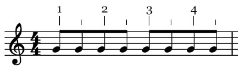
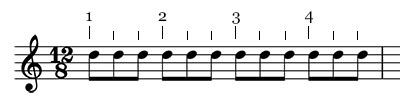
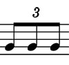
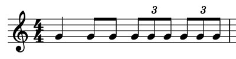
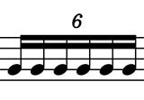
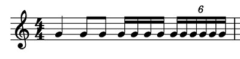

Rythme (2ème partie)
1. Binaire
On parle de rythme binaire lorsque le temps de la mesure est divisible par 2 ou un multiple de 2.
Musique binaire :
Julien Doré - NousMichael Jackson - Beat It
2. Ternaire
On parle de rythme ternaire lorsque le temps de la mesure est divisible par 3 ou un multiple de 3.
Musique ternaire :
Jeff Buckley - HallelujahRighteous Brothers - Unchained Melody ('Ghost' Soundtrack)
3. Le triolet
C'est la division d'un temps binaire (qui normalement se divise en 2 croches) en 3 croches.
Exemple :
4. Le sextolet
C'est la division d'un temps binaire (qui normalement se divise en 4 doubles croches) en 6 doubles croches.
Exemple :
